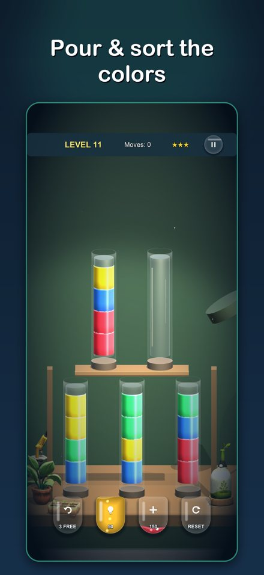
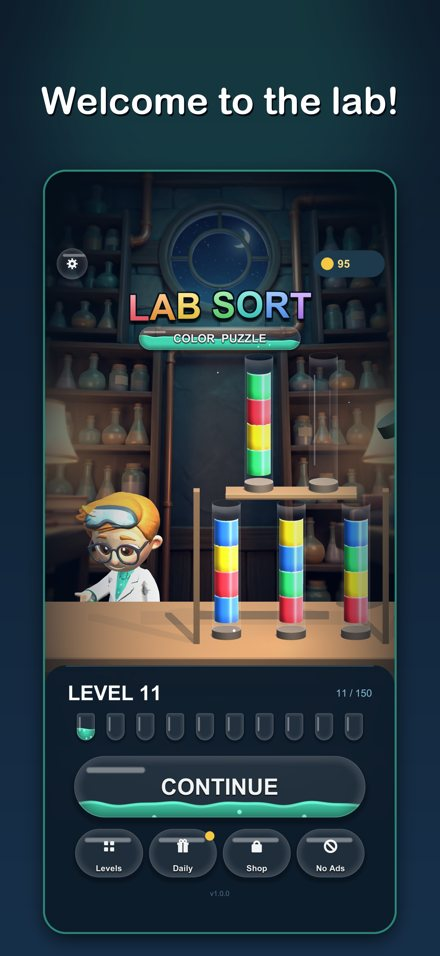

Lab Sort:
Color Puzzle
Pour colorful liquids between glass vials until every vial holds a single color. 250 handcrafted levels across 8 glowing laboratories — no timers, no pressure.
Download on the App Store

Pour colorful liquids between glass vials until every vial holds a single color. 250 handcrafted levels across 8 glowing laboratories — no timers, no pressure.
Download on the App Store
